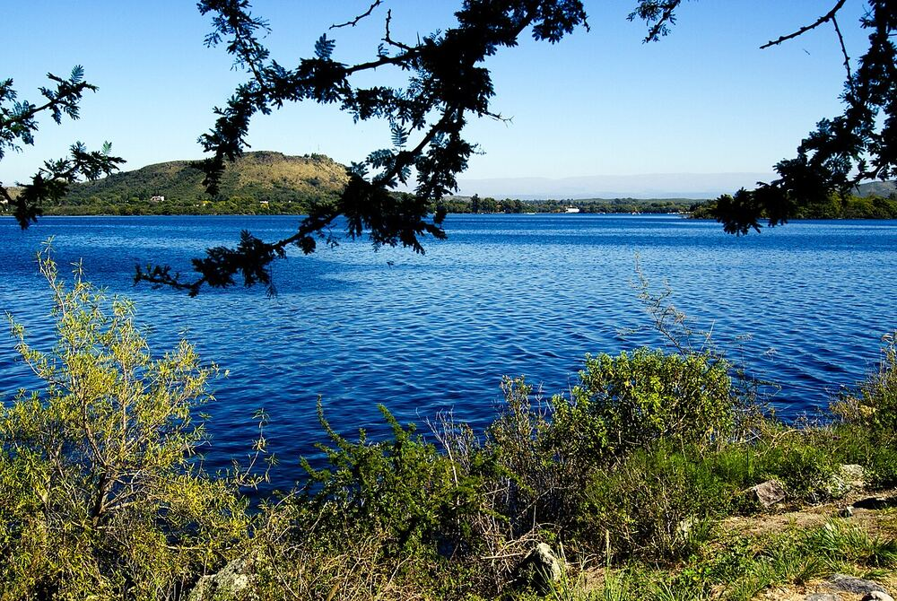
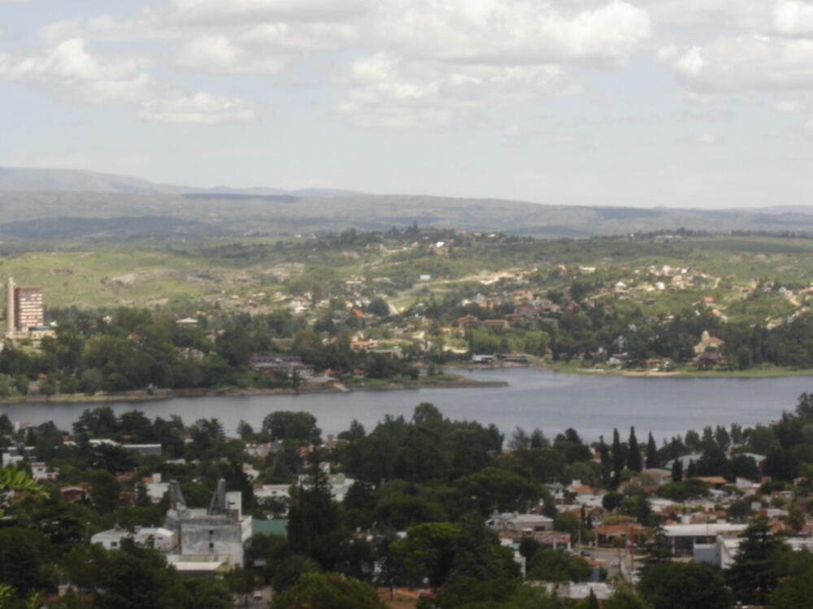
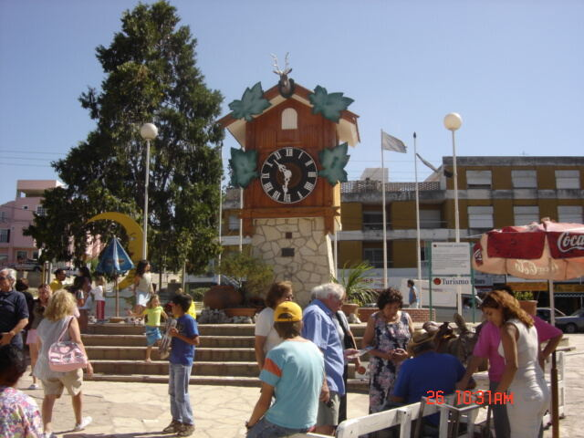
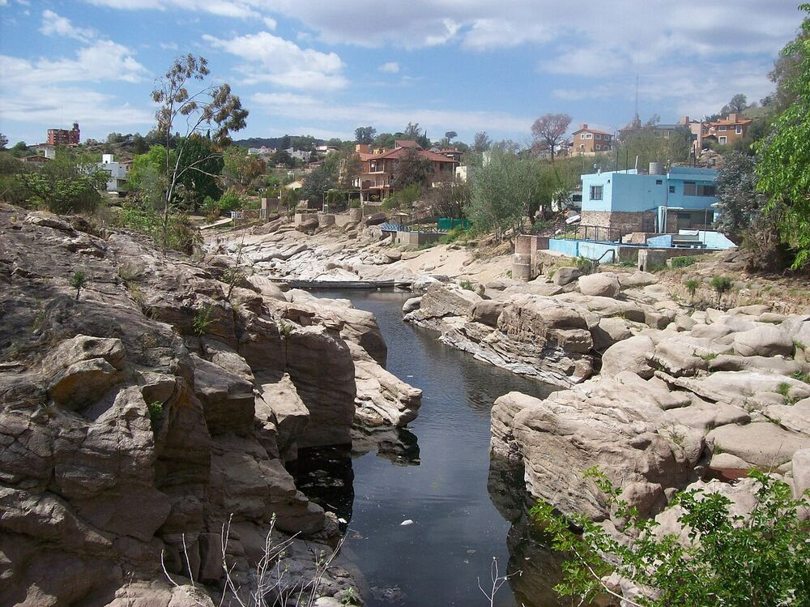
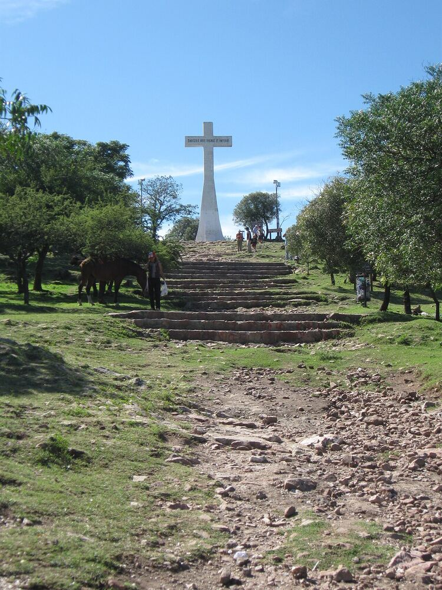
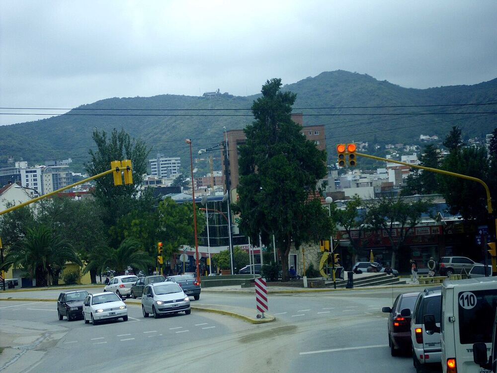
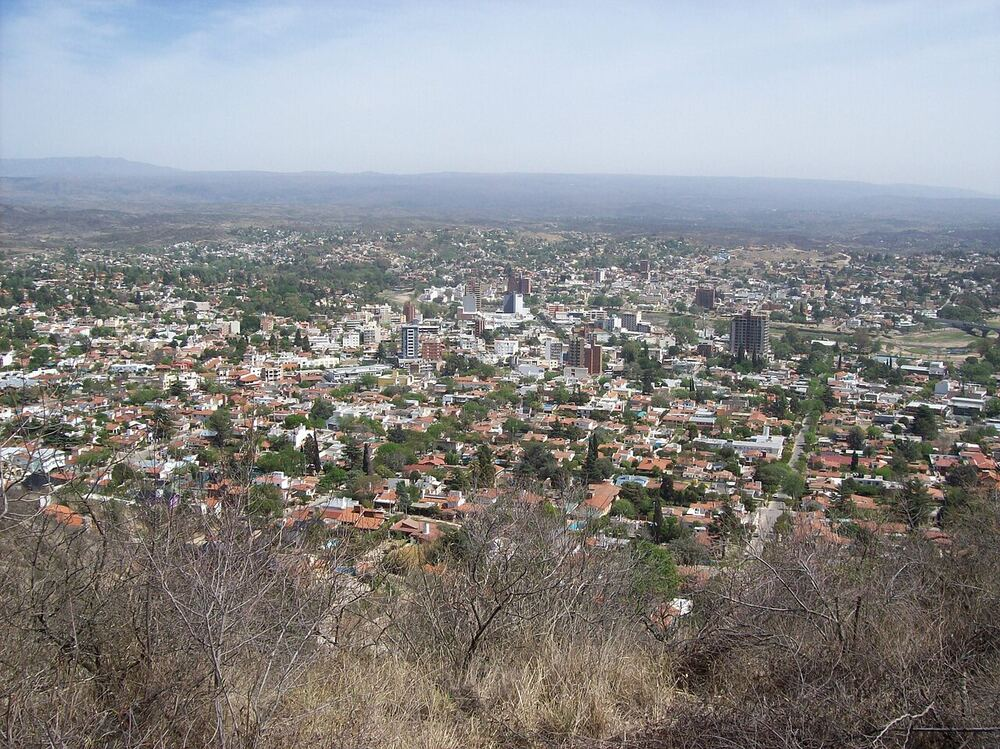

Lago San Roque
El gran espejo de agua que le da vida a la ciudad, ideal para deportes náuticos, paseos en catamarán y atardeceres inolvidables.
Más informaciónA orillas del Lago San Roque, en el corazón del Valle de Punilla, Villa Carlos Paz combina naturaleza, sierras y una intensa vida turística. Descubrí paisajes, actividades al aire libre y una propuesta cultural para toda la familia.
Descubrí los destinos
Los lugares imperdibles para conocer durante tu estadía en la villa.

El gran espejo de agua que le da vida a la ciudad, ideal para deportes náuticos, paseos en catamarán y atardeceres inolvidables.
Más información
Símbolo histórico de la ciudad y parada obligada para el recuerdo fotográfico en el centro de Villa Carlos Paz.
Más información
Playas de arena sobre el lago, perfectas para disfrutar del sol, la arena y actividades acuáticas en familia.
Más información
Subí en teleférico o a pie hasta la cruz y disfrutá de las vistas más completas de todo el Valle de Punilla.
Más información
Recorré la peatonal, sus paseos de compras, la costanera y la intensa actividad comercial y gastronómica.
Más información
Caminos entre las sierras con vistas privilegiadas, ideales para trekking y contacto directo con la naturaleza.
Más informaciónOpciones para disfrutar al aire libre durante todo el año.
Circuitos guiados y senderos autoguiados por las sierras de Punilla para todos los niveles.
Navegá el Lago San Roque en kayak y descubrí la villa desde una perspectiva diferente.
Rutas de montaña y bicisendas urbanas para recorrer la ciudad y sus alrededores sobre dos ruedas.
Excursiones a caballo por las sierras con guías locales, ideales para conectar con el paisaje serrano.
Todo lo que necesitás saber para organizar tu visita.
Villa Carlos Paz se encuentra a 36 km de la ciudad de Córdoba por la Ruta Provincial E-55. Se puede acceder en auto, en ómnibus de larga distancia hasta la Terminal de Ómnibus local, o en vuelos hasta el Aeropuerto Internacional de Córdoba.
Oficina de Informes Turísticos: todos los días de 8:00 a 20:00 hs. Ubicada en Av. San Martín y Ojo de Agua, junto al Reloj Cucú.
Teléfono: (3541) 123456
Correo: turismo@villacarlospaz.tur.ar
Dirección: Av. San Martín 400, Villa Carlos Paz, Córdoba.